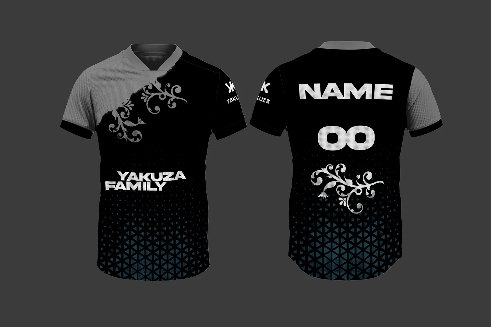
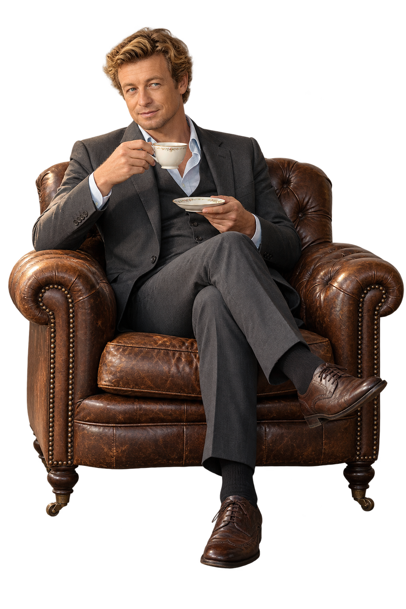
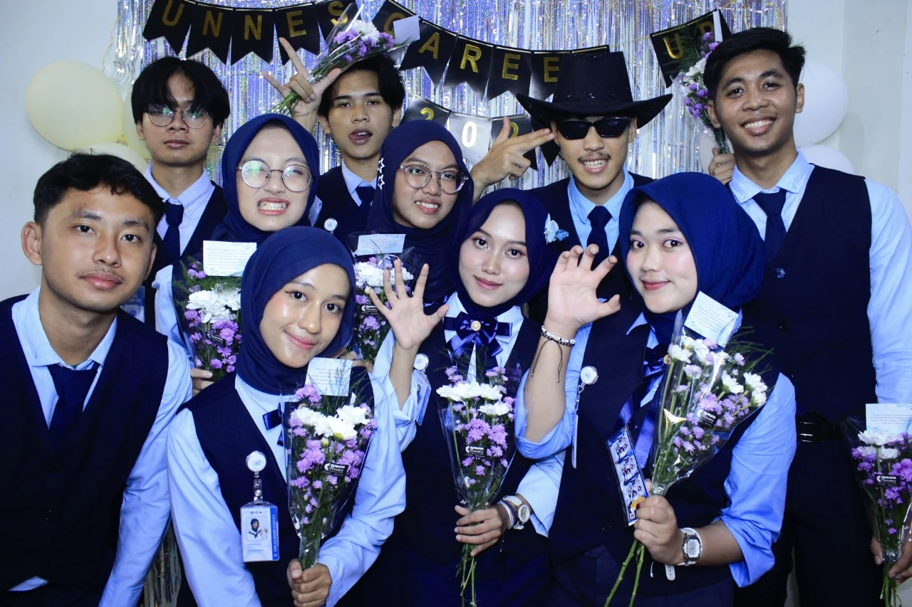
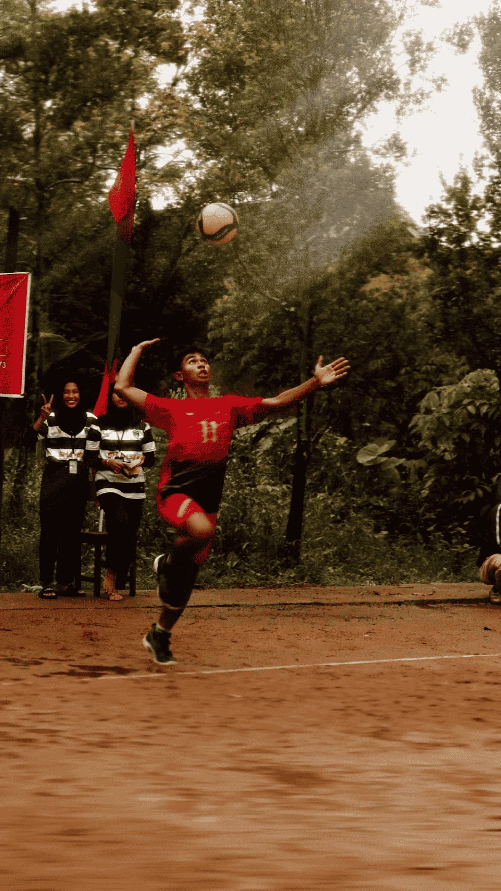

Visual
Gagasan menjadi bentuk yang bisa dilihat.
Jersey kelas · 2024
A study in curiosity
Saya Althaf Ivander Luthf. Mahasiswa psikologi yang menyukai visual, komunikasi, dan ide yang mempertemukan orang.
PSIKOLOGI · DESAIN · CERITA · KOLABORASI

Tentang Althaf
Saya mempelajari psikologi dan menaruh minat pada kreativitas, komunikasi, serta desain visual. Ketertarikan pada cara orang berpikir dan merespons sesuatu ikut membentuk cara saya berkarya.
Pengalaman saya bergerak dari produksi konten dan desain, ke dokumentasi acara, pengaturan audio, dan organisasi mahasiswa. Saya senang mengolah ide menjadi karya visual atau tulisan yang dapat terhubung dengan orang lain.
Alat yang saya gunakan
Meja observasi
Psikologi memberi saya sudut pandang. Visual, cerita, dan kolaborasi memberi saya ruang untuk mempraktikkannya.
Bentuk karyanya berbeda.
Rasa ingin tahunya sama.

Gagasan menjadi bentuk yang bisa dilihat.
Jersey kelas · 2024

Komunikasi menjadi kerja bersama.
Career Up · 2025

Merekam momen yang membawa suasana.
Dokumentasi FSO2S · 2023
Beberapa karya pilihan, diikuti arsip lengkap. Buka tiap berkas untuk melihat peran dan dokumentasinya.
15 proyek dalam arsip.
Divisi sponsor untuk kegiatan pengembangan karier.
Identitas visual untuk festival olahraga sekolah.
Desain logo futsal melalui proses revisi dan umpan balik.
Dokumentasi festival seni, olahraga, dan sains.
Perjalanan saya mencakup ruang kreatif digital, kegiatan sekolah, dan organisasi mahasiswa.
2026
HRD UKMP, ketua Dies Natalis, wakil ketua Upgrading, dan koordinator lomba fotografi PORABUSTER. Portofolio juga mencatat BEM KM serta pendanaan PKM-RSH.
Lihat berkas 20262025
Divisi sponsor Career Up UNNES dan desain logo BHINNEKA F.C, dua ruang untuk melatih komunikasi dan menerjemahkan kebutuhan menjadi hasil.
Lihat berkas 20252024
Desain jersey kelas, tata audio Pentas Seni SMA Negeri 1 Pontianak, dan pelatihan Sekolah Pasar Modal.
Lihat berkas 20242023
Dokumentasi FSO2S, siaran langsung Pesantren Ramadhan melalui OBS Studio, dan penyusunan audio pertunjukan sekolah.
Lihat berkas 20232020
Fensu Lix menjadi ruang untuk membuat konten hiburan dan gaming, dari perencanaan ide sampai editing dan thumbnail.
Kunjungi Fensu LixSebuah percakapan bisa menjadi awal.
Untuk proyek kreatif, kegiatan organisasi, atau kolaborasi yang berangkat dari rasa ingin tahu.